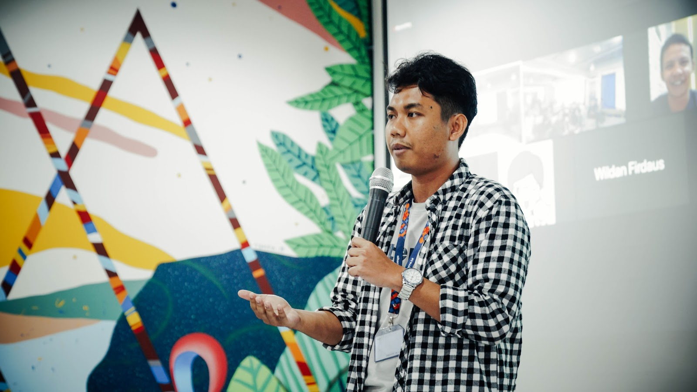
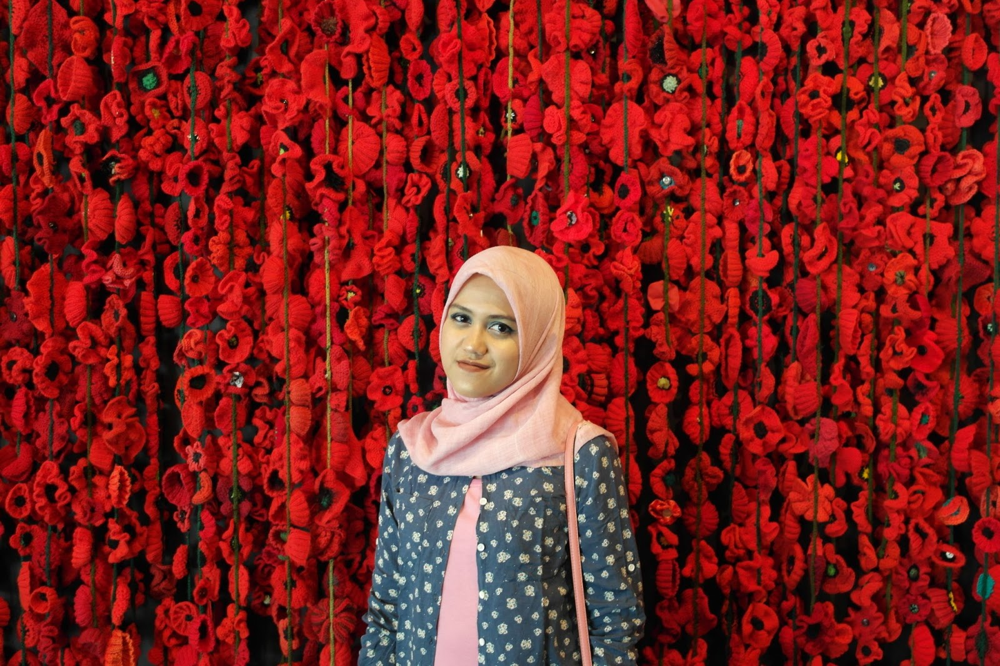
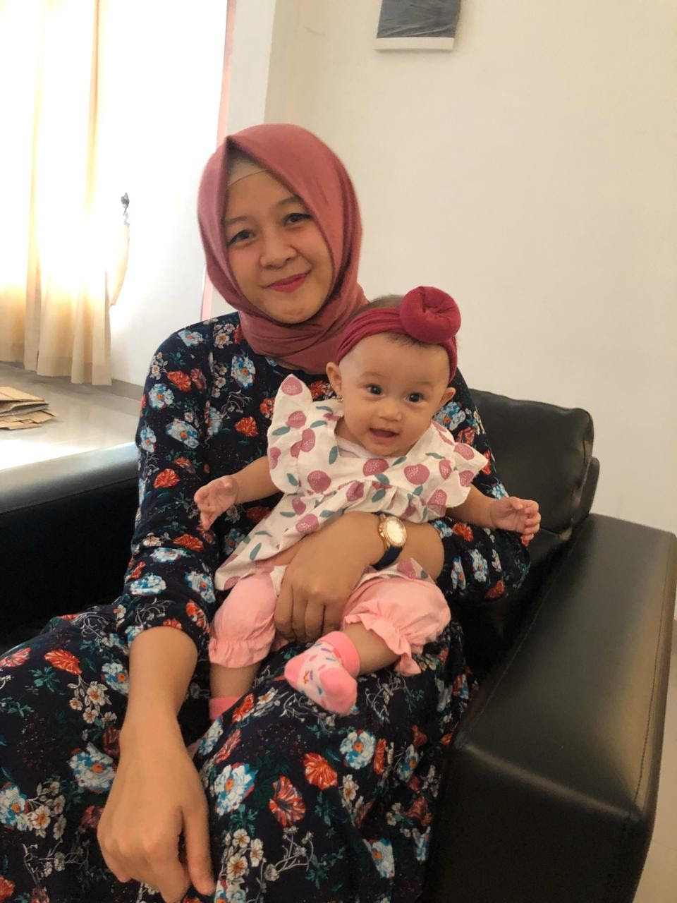
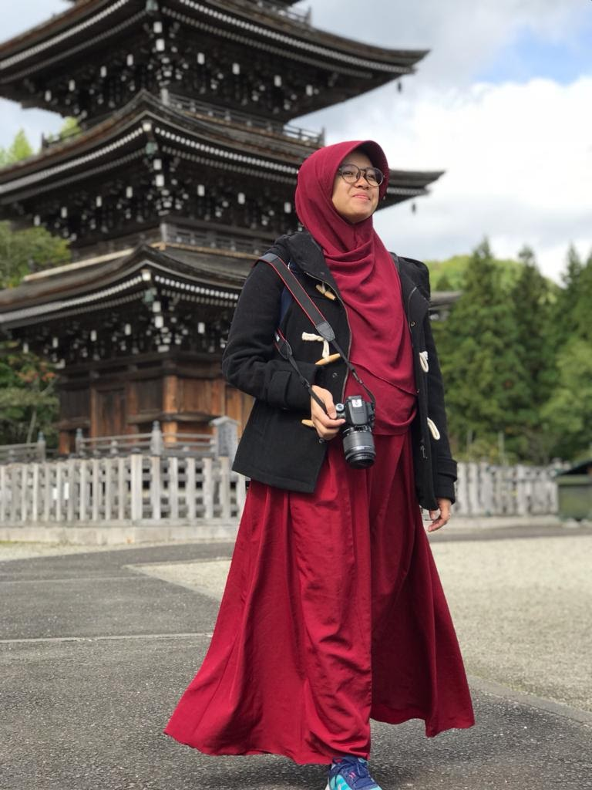
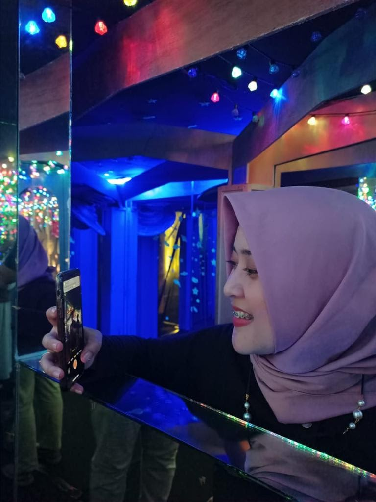
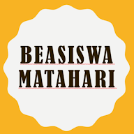
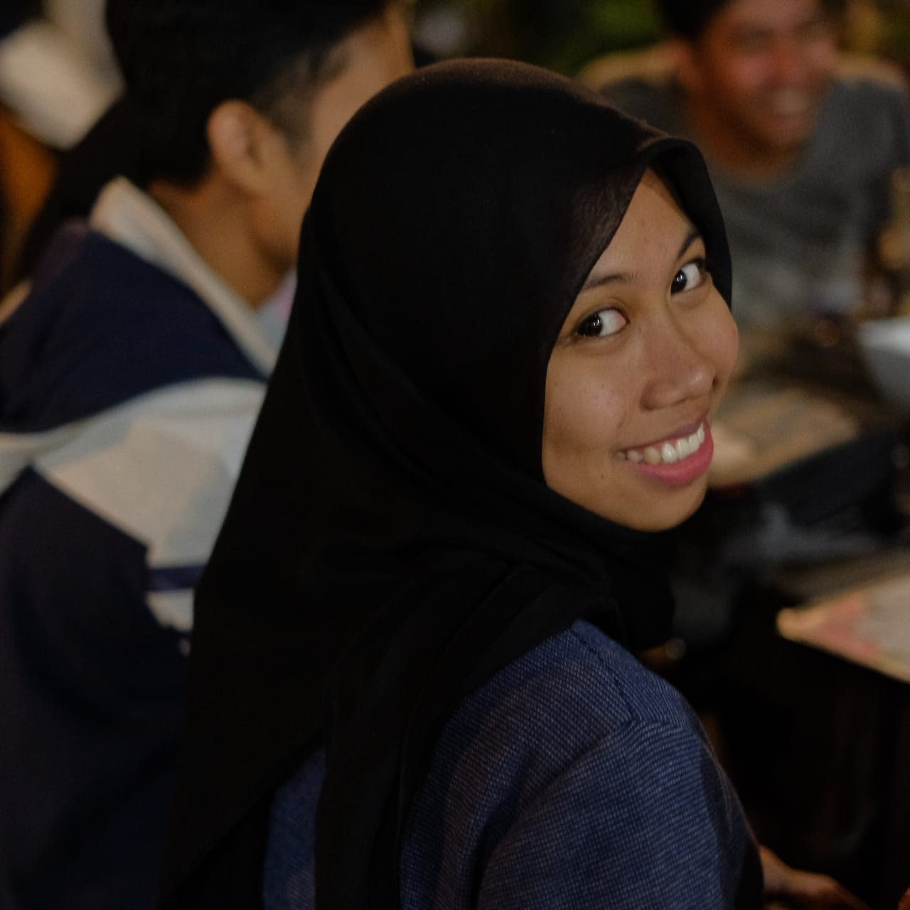
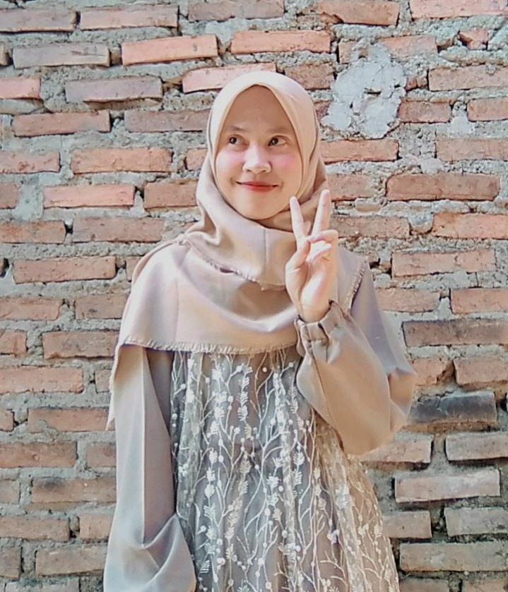
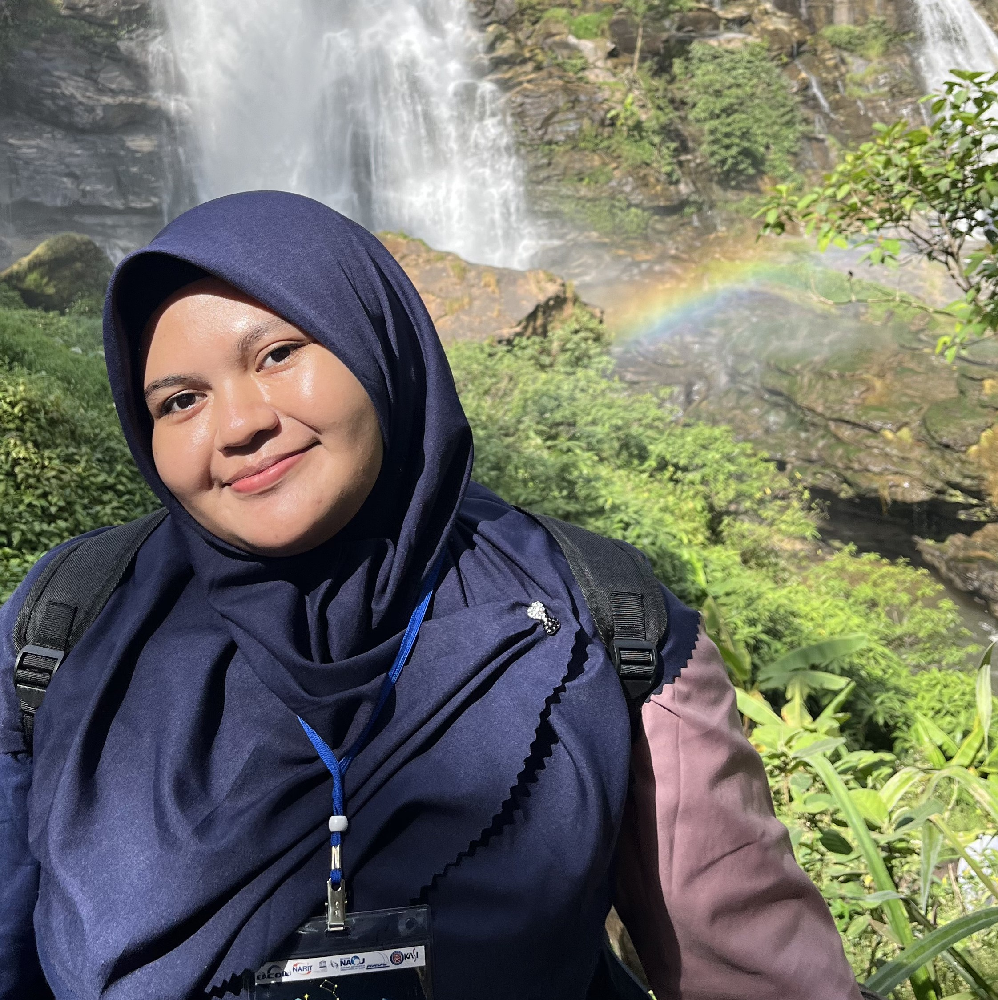
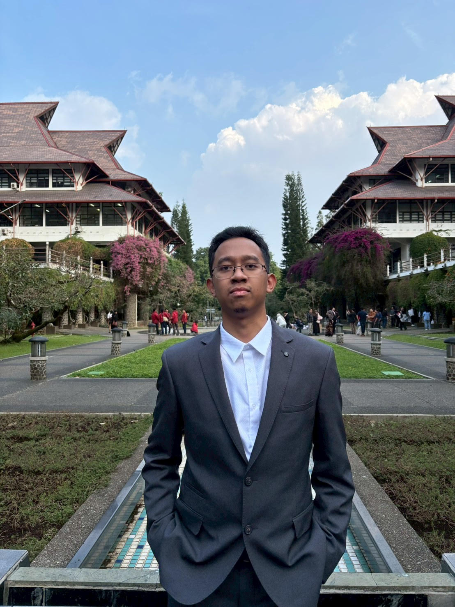

Charisma Fadzri Triprakoso
Karyawan swasta yang ingin menjadikan komunitas Astronomi ITB lebih bermanfaat bagi adik-adik mahasiswa.
Pengurus v2
Pengurus Beasiswa Matahari terdiri dari alumni dan penerima sebelumnya yang kembali ingin berkontribusi kepada mahasiswa Astronomi ITB.
Halaman ini menampilkan profil singkat mereka dalam grid yang lebih rapi dan mudah dipindai daripada daftar panjang bergaya template lama.
 Tim inti
Tim inti
Roster
Setiap kartu menampilkan nama, angkatan, dan satu kalimat ringkas tentang alasan mereka terlibat dalam Beasiswa Matahari.

Karyawan swasta yang ingin menjadikan komunitas Astronomi ITB lebih bermanfaat bagi adik-adik mahasiswa.

Berkomitmen membantu mahasiswa yang membutuhkan bantuan agar studinya tetap berjalan lancar.

Ingin menjadikan masa kuliah yang berkesan sebagai energi untuk memberi manfaat yang lebih luas.

Terus menjaga rasa kekeluargaan yang ia dapatkan selama berkuliah di Astronomi ITB.

Percaya bahwa kendala finansial bukan penghalang untuk tetap bertumbuh dan meraih cita-cita.
Melihat Beasiswa Matahari sebagai ruang untuk memberi ruang bertumbuh bagi calon talenta masa depan.

Ingin membantu sesama dan menjadi lebih bermanfaat.
Berharap bantuan sekecil apa pun dapat berarti besar bagi mahasiswa yang membutuhkan.

Ingin membagikan semangat dan keyakinan kepada teman-teman mahasiswa yang sedang berjuang.

Merasakan manfaat besar sebagai beswan dan kini ikut menjaga keberlanjutan program ini.

Berawal dari penerima beasiswa, kini kembali hadir untuk membantu adik-adik Astronomi ITB.
Ingin membantu Beasiswa Matahari agar tetap menjadi ruang dukungan yang relevan dan dekat.

Percaya bahwa pendidikan adalah hak setiap warga negara dan perlu terus diperjuangkan.